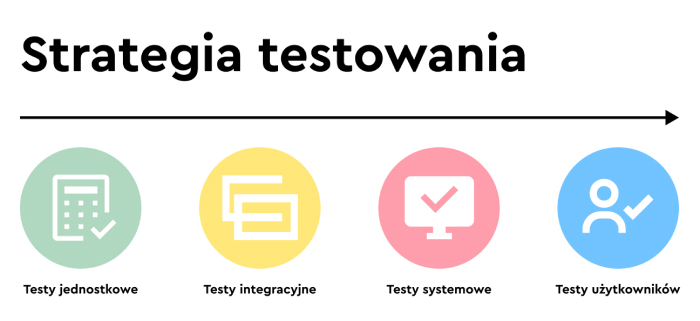

Czym są systemy oprogramowania, oraz wprowadzenie do testowania
Systemy oprogramowania są nieodłączną częścią naszego życia we wszystkich jego obszarach - od aplikacji biznesowych (np. w bankowości) po produkty użytkowe (np. samochody). Jednocześnie większość z nas miała zapewne do czynienia z oprogramowaniem, które nie zadziałało tak, jak powinno. Nieprawidłowe funkcjonowanie oprogramowania może powodować wiele problemów, w tym straty finansowe, stratę czasu, utratę reputacji firmy, a nawet utratę zdrowia lub życia. Testowanie oprogramowania pozwala ocenić jego jakość i zmniejszyć ryzyko wystąpienia awarii podczas eksploatacji. Powszechnie uważa się, że testowanie polega wyłącznie na wykonywaniu testów, czyli uruchamianiu oprogramowania i sprawdzaniu uzyskanych rezultatów. Jednak testowanie oprogramowania to proces obejmujący czynności, które wykraczają poza samo wykonywanie testów. W skład procesu testowego wchodzą również takie czynności jak: planowanie, analiza, projektowanie i implementacja testów, raportowanie o postępie i wynikach testów oraz dokonywanie oceny jakości przedmiotu testów. Testowanie może wymagać uruchomienia testowanego modułu lub systemu - mamy wtedy do czynienia z tzw. testowaniem dynamicznym. Można również wykonywać testy bez uruchamiania testowanego obiektu - takie testowanie nazywa się testowaniem statycznym. A zatem testowanie obejmuje również przegląd produktów pracy takich jak: wymagania, historyjki użytkownika i kod źródłowy. Inne nieporozumienie polega na postrzeganiu testowania jako czynności skupionej wyłącznie na weryfikacji wymagań, historyjek użytkownika lub innych form specyfikacji. Chociaż w ramach testowania rzeczywiście sprawdza się, czy system spełnia wyspecyfikowane wymagania, to jednak przeprowadza się również walidację, której zadaniem jest sprawdzenie, czy system spełnia wymagania użytkowników oraz inne potrzeby interesariuszy w swoim środowisku operacyjnym.
